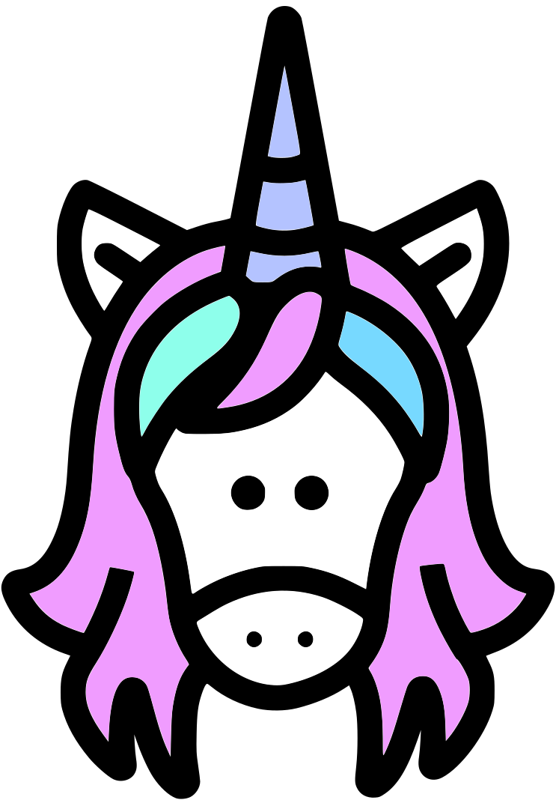
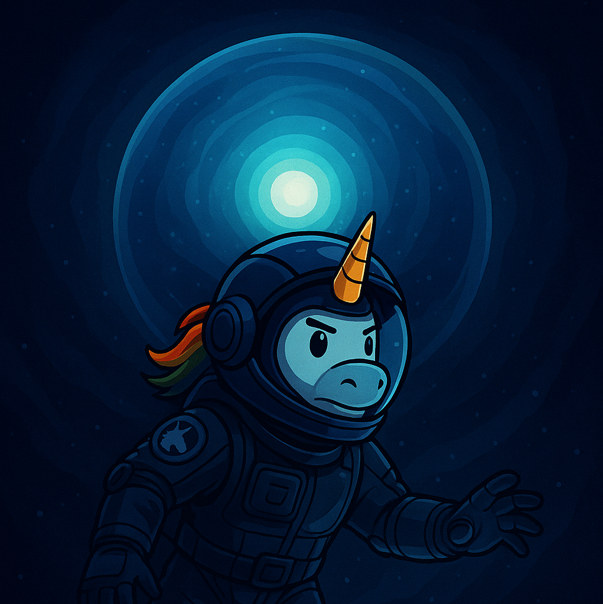
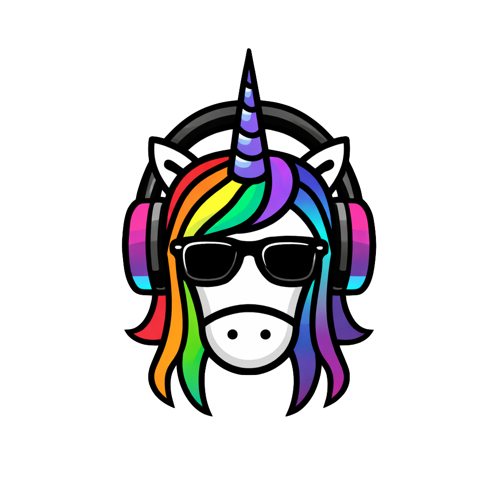

Brand-Ops
Brand-Ops
Standards · portfolio audit
Graded like it ships.
Five measured dimensions, recomputed on every asset event. No vanity numbers — every score traces to a checkable rule.
BrandGradeDimensionsTrendOpen issuesLast audit

Magic Unicornmasterbrand
color
type
mark
coverage
voice

Center Deepdivision
color
type
mark
coverage
voice

Unicorn Commanderdivision
color
type
mark
coverage
voice
Majik's Onlinedivision
color
type
mark
coverage
voice

Majik's Music Studioproduct
color
type
mark
coverage
voice

Meeting-Opsproduct
color
type
mark
coverage
voice
Dimensions
Each dimension is computed from rules in the brand record — click any row for the receipts.
Color fidelityassets vs allowed hexes + hue arc
92
Type disciplinedeclared families in rendered text
90
Mark usageclear space + min size at publish
71
Coverageapproved asset types / required
50
Voicecopy lint across published text
88
Open issues — 2
Every issue shows its evidence and carries its own fix.
off-brand color
deep-poster.png drifts out of the hue arc
found 2d ago
found #1d4ed8
→ nearest allowed
#0891b2 Current
23% of significant pixels affected
coverage gap
3 kit types missing — social, podcast, avatar
standing
Coverage is the grade's biggest drag (−14). The steward can close it in one run.
Methodology
Grade = weighted blend — color 25 · type 15 · mark 20 · coverage 25 · voice 15 — recomputed on every asset event and nightly audit. Mark usage currently measures min-size only; clear-space telemetry lands with publish-context capture (honest gap, scored conservatively). Exceptions are logged and expire — an allowance is a decision, not a leak.